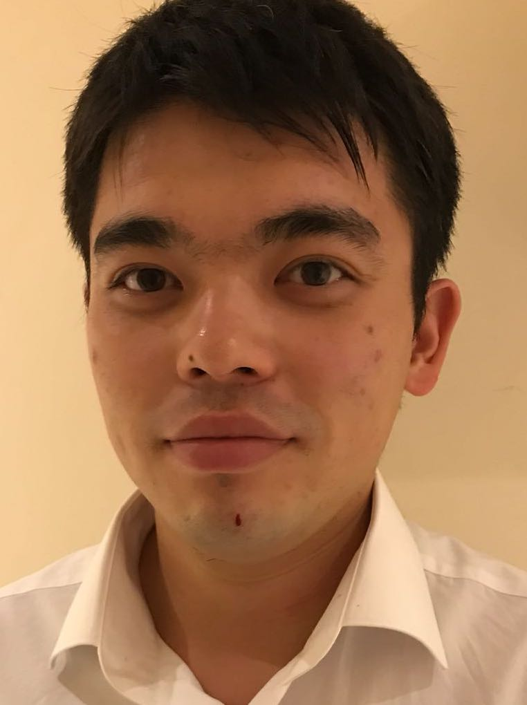

<h1>Dr Rauan Akylzhanov</h1>

<br>
<th>
	Pure Research Associate, <a href="https://www.qmul.ac.uk/maths/" target ="_blank">
School of Mathematical Sciences  </a> <br/>
	<address>
	<a href="http://www.imperial.ac.uk/" target="_blank">
Queen Mary University of London </a>
London, The United Kingdom  <br/>
	Office: CB203 Queens' Building
<br/>
 Email: r.akylzhanov  ''at'' qmul.ac.uk
<br>
 <a href="https://www.qmul.ac.uk/maths/profiles/akylzhanovrauan.html">College webpage</a>
	</address>
Application Materials:
			<br/>
			<a href= "./portfolio/CV_Akylzhanov.pdf" target="_blank"> CV</a>,

		 <a href="./portfolio/research_statement.pdf" target="_blank"> Research
			Statement</a>,
			<a href="./portfolio/teaching_statement.pdf" target="_blank"> Teaching Statement
			</a>,
<a href="./portfolio/gta-certificate.pdf" target="_blank"> Graduate Teaching Certificate
</a>,
<a href="./portfolio/DCMPrizeCertificate.Akylzhanov.pdf" target="_blank"> Doris Chen Merit Award
</a>.
